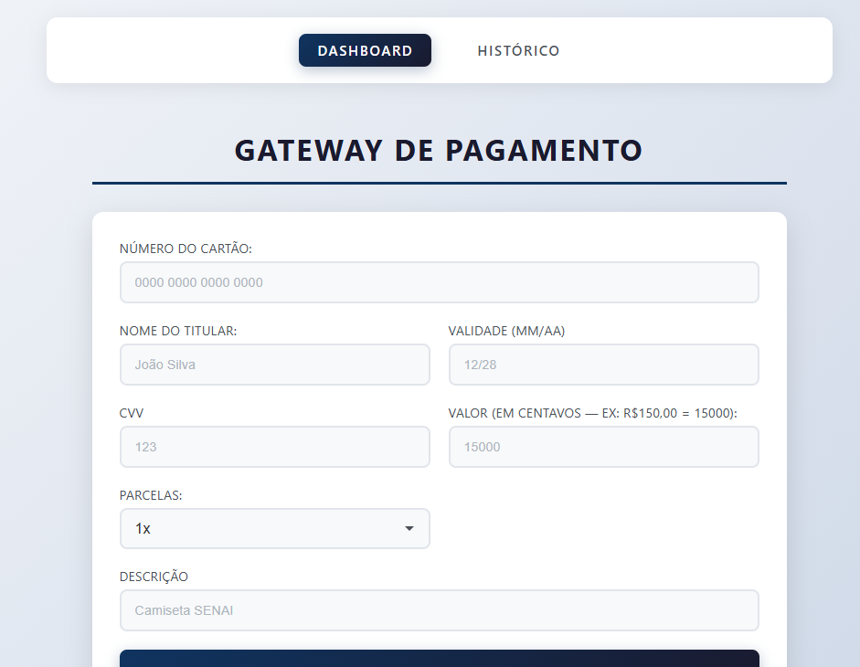

Bem-vindo(a) à seção de Internet das Coisas (IoT). A integração entre o mundo físico e o digital por meio de dispositivos conectados é fundamental para a inovação e a automação de processos. Nesta página, reuni um compilado dos meus principais trabalhos, protótipos e projetos práticos que demonstram minha evolução e o domínio dos conceitos trabalhados durante o ano letivo. Confira as atividades abaixo.

O desafio proposto pela BP Promotora consistia no desenvolvimento de um sistema financeiro,
no qual era possível inserir informações na dashboard, como número do cartão, data de
vencimento, valor da transação, entre outros dados. A plataforma permitia realizar
pagamentos, que posteriormente ficavam registrados no histórico, além de possibilitar o
estorno das transações. A experiência foi bastante diferente e enriquecedora, pois tivemos
contato com conceitos que ainda não havíamos explorado com tanta profundidade. Durante o
desenvolvimento, conseguimos compreender melhor alguns aspectos importantes para uma
empresa, como a preocupação com a latência e o desempenho do sistema. Foi uma atividade
muito interessante, que contribuiu para nosso aprendizado sobre conceitos técnicos,
desenvolvimento de sistemas e resolução de problemas.
Para a criação do projeto, utilizamos JavaScript, React e Node.js.